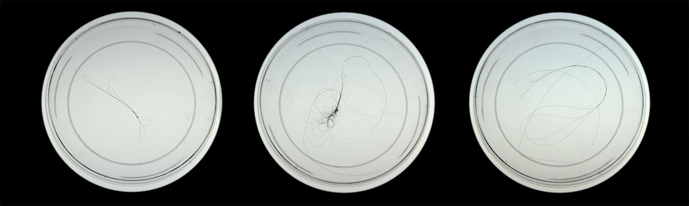
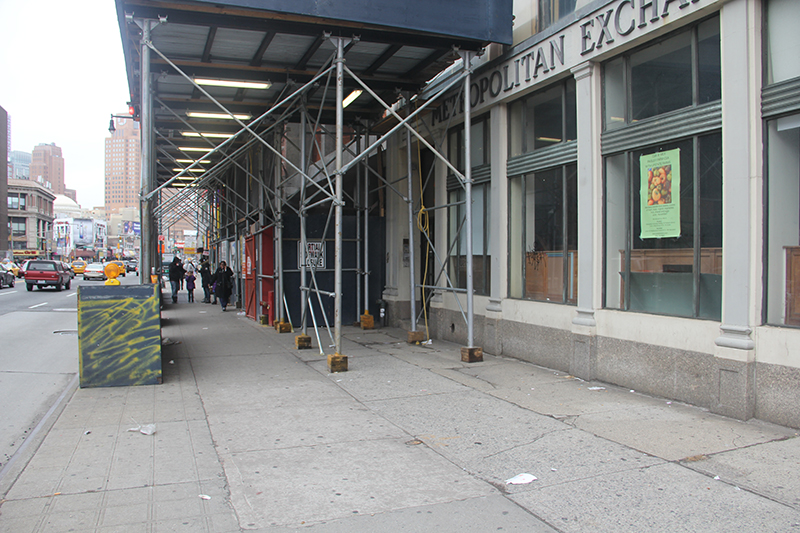
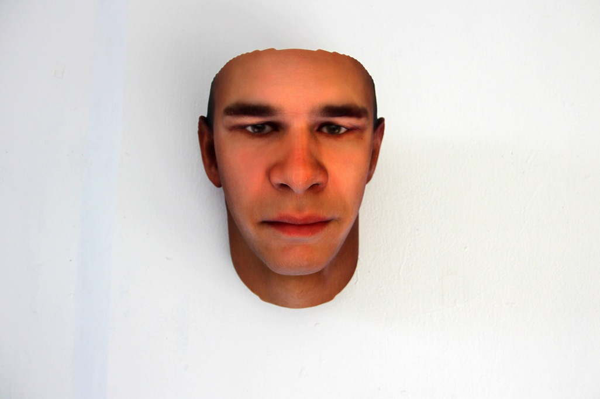
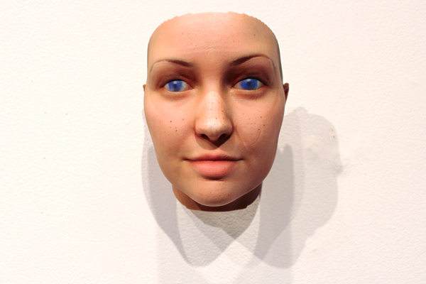

Stranger Visions is a series of 3D-printed portraits by Heather Dewey-Hagborg, generated from DNA that strangers left behind in public places.[1] It is part of the second section of Yunso's Triangle, along with Latent Chair and Cumulus.
Stranger Visions, by Heather Dewey-Hagborg, turns DNA left by strangers into 3D-printed faces.[1] It is part of the second section of Yunso's Triangle, along with Latent Chair and Cumulus.
Process
Dewey-Hagborg collected hairs, chewed gum and cigarette butts from the streets, public bathrooms and waiting rooms of New York City. She extracted DNA from each sample and analysed it to computationally generate a life-size, full-colour portrait of what that person might look like, based on genomic research.
Each portrait is shown with its sample and a record of where and when it was found, along with the traits read from it: maternal haplogroup, biological sex, likely eye colour, nose size and odds of obesity.
Hairs, gum and cigarette butts from New York City streets are sequenced, and each sample becomes a life-size portrait, shown with where and when it was found and the traits read from it.
-

Samples -

Location
Concept
The project calls attention to the developing technology of forensic DNA phenotyping, the potential for a culture of biological surveillance, and the impulse towards genetic determinism. Two years later, a company began offering DNA-generated face predictions to police in the United States.
It points at forensic DNA phenotyping, biological surveillance and genetic determinism; two years later, police were buying the same service.
-

Portrait -

Print
References
- Dewey-Hagborg, Heather. Stranger Visions. deweyhagborg.com. ↑